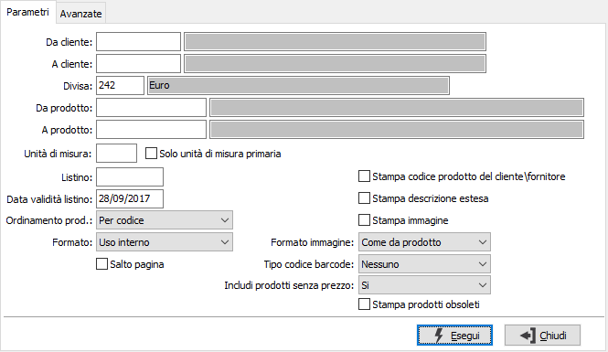
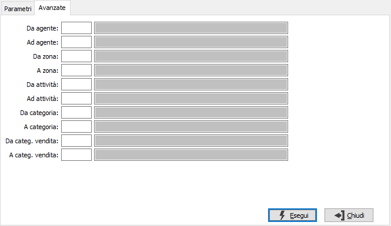

Stampa listino globale
La procedura consente di effettuare una stampa congiunta del listino di un cliente comprendente eventuali prezzi personalizzati, contratti ed eventualmente da anagrafica articolo.

DA CLIENTE: codice del cliente, presente in anagrafica, da cui si vuole iniziare la selezione di stampa. Confermando a vuoto, la selezione inizia dal primo cliente valido. Sul campo sono attive le funzioni di ricerca (F9).
A CLIENTE: codice del cliente, presente in anagrafica, con cui si vuole terminare la selezione di stampa. Confermando a vuoto, la selezione termina con l'ultimo cliente valido. Sul campo sono attive le funzioni di ricerca (F9).
DIVISA: codice della divisa per cui si vuole effettuare la stampa. Sul campo sono attive le funzioni di ricerca (F9).
DA PRODOTTO: codice del prodotto da cui si intende iniziare la selezione di stampa; confermando a vuoto la selezione inizia dal primo codice valido. Sul campo sono attive le funzioni di ricerca (F9).
A PRODOTTO: codice del prodotto con cui si intende concludere la selezione di stampa; confermando a vuoto la selezione termina con l’ultimo codice valido. Sul campo sono attive le funzioni di ricerca (F9).
UNITà di misura: codice relativo alla tabella unità di misura da utilizzare come filtro per la selezione dei prezzi del listino; questo parametro è alternativo a "Solo unità di misura primaria". Sul campo sono attive le funzioni di ricerca (F9).
Solo unità di misura primaria: se spuntato sarà applicato un filtro sulla selezione dei prodotti nel listino per includere solo i prodotti nella loro unità di misure primaria; questo parametro è alternativo a "Unità di misura".
LISTINO: indica il codice del listino da utilizzare per i prezzi non personalizzati. Sul campo sono attive le funzioni di ricerca (F9).
DATA VALIDITÀ LISTINO: definisce la data, tramite cui ricercare i prezzi nel listino. Saranno validi solo i prodotti le cui date di validità comprendono, come periodo, la data indicata.
ORDINAMENTO PRODOTTO: definisce il metodo di ordinamento dei prodotti in stampa: per codice, per descrizione.
FORMATO: definisce il formato di stampa da utilizzare; valori possibili: stampa ad uso interno, stampa ad uso esterno su carta bianca, stampa ad uso esterno su carta intestata.
SALTO PAGINA: se spuntato indica di effettuare un cambio pagina per ogni cliente.
STAMPA CODICE PRODOTTO CLIENTE/FORNITORE: definisce se stampare l'eventuale codice del prodotto previsto per il cliente/fornitore (casella con segno di spunta).
STAMPA DESCRIZIONE ESTESA: definisce se deve essere stampate la descrizione estesa dei prodotti (casella con segno di spunta).
STAMPA IMMAGINE: definisce se deve essere stampata l'immagine associata al prodotto (casella con segno di spunta).
FORMATO IMMAGINE: in caso di stampa dell'immagine del prodotto, definisce il formato di stampa: come da prodotto, piccola, media, grande.
TIPO CODICE BARCODE: definisce se e quale codice a barre stampare nel listino.
INCLUDI PRODOTTI SENZA PREZZO: consente di stampare anche i prodotti senza prezzo, di escluderli o di stampare solo questa tipologia di prodotti.
STAMPA PRODOTTI OBSOLETI: consente di stampare anche i prodotti definiti come obsoleti (casella con segno di spunta).

DA AGENTE: codice dell'agente da cui si intende iniziare la selezione di stampa; confermando a vuoto la selezione inizia dal primo codice valido. Sul campo sono attive le funzioni di ricerca (F9).
A AGENTE: codice dell'agente con cui si intende concludere la selezione di stampa; confermando a vuoto la selezione termina con l’ultimo codice valido. Sul campo sono attive le funzioni di ricerca (F9).
DA ZONA: codice della zona da cui si intende iniziare la selezione di stampa; confermando a vuoto la selezione inizia dal primo codice valido. Sul campo sono attive le funzioni di ricerca (F9).
A ZONA: codice della zona con cui si intende concludere la selezione di stampa; confermando a vuoto la selezione termina con l’ultimo codice valido. Sul campo sono attive le funzioni di ricerca (F9).
DA ATTIVITÀ: codice dell'attività da cui si intende iniziare la selezione di stampa; confermando a vuoto la selezione inizia dal primo codice valido. Sul campo sono attive le funzioni di ricerca (F9).
A ATTIVITÀ: codice dell'attività con cui si intende concludere la selezione di stampa; confermando a vuoto la selezione termina con l’ultimo codice valido. Sul campo sono attive le funzioni di ricerca (F9).
DA CATEGORIA: codice della categoria merceologica da cui si intende iniziare la selezione di stampa; confermando a vuoto la selezione inizia dal primo codice valido. Sul campo sono attive le funzioni di ricerca (F9).
A CATEGORIA: codice della categoria merceologica con cui si intende concludere la selezione di stampa; confermando a vuoto la selezione termina con l’ultimo codice valido. Sul campo sono attive le funzioni di ricerca (F9).
DA CATEGORIA VENDITA: codice della categoria di vendita da cui si intende iniziare la selezione di stampa; confermando a vuoto la selezione inizia dal primo codice valido. Sul campo sono attive le funzioni di ricerca (F9).
A CATEGORIA VENDITA: codice della categoria di vendita con cui si intende concludere la selezione di stampa; confermando a vuoto la selezione termina con l’ultimo codice valido. Sul campo sono attive le funzioni di ricerca (F9).